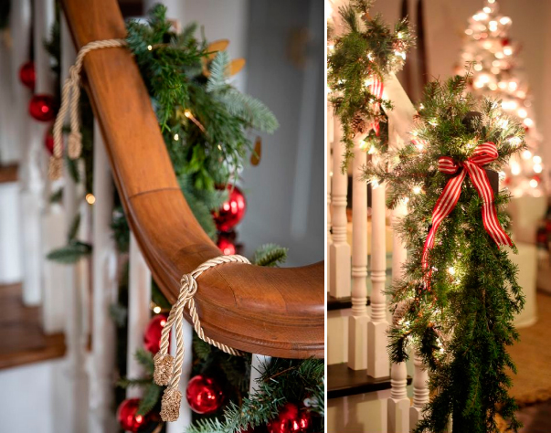
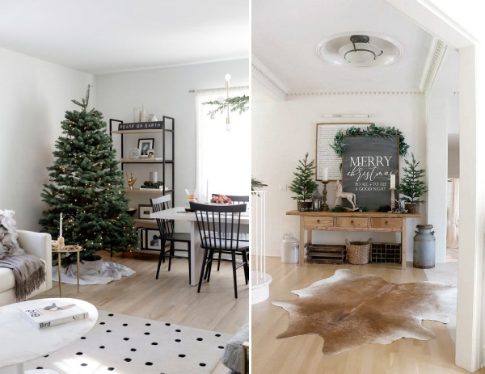
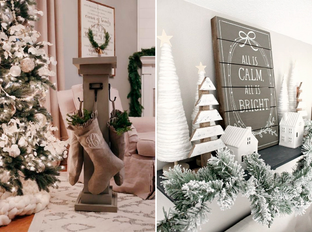
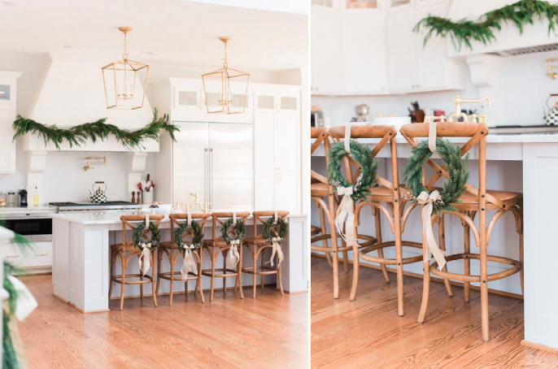

Новогоднее настроение — то самое, которое помогает нам верить в волшебство и погружает нас в атмосферу добра и оптимизма, во многом зависит от обстановки дома. Поэтому ежегодно каждый из нас стремится украсить комнату как можно более нарядно и уютно. Мало просто украсить ёлку: добавьте декоративные элементы на окна, тумбы, столы и другую мебель. Подсвечники, гирлянды, разнообразные игрушки — всё это создаст у вас дома целый мир с неповторимой праздничной атмосферой. Причём совсем не обязательно закупаться специальными украшениями. Для новогодней композиции можно использовать и подручные средства, а что-то даже сделать своими руками.
.jpg)
Чтобы сделать комнату ещё более тёплой и уютной, используйте подушки и пледы. Стену над камином можно украсить венком, а дверь — композицией с рождественскими колокольчиками.
Чем больше огоньков, лампочек и свечей, тем лучше! Небольшие свечки и подсвечники можно собрать в единую композицию на блюде. Украсьте её шишками и веточками хвои.
Ориентируйтесь на стиль интерьера: если хочется сохранять минимализм, подберите лаконичные украшения — например, маленькие ёлочки и классические белые свечи.
Чтобы добавить интерьеру изюминку, комбинируйте традиционные новогодние и нейтральные элементы. Например, можно собрать вот такие еловые подвески из шишек и лент.
 Новогодний Hand Made